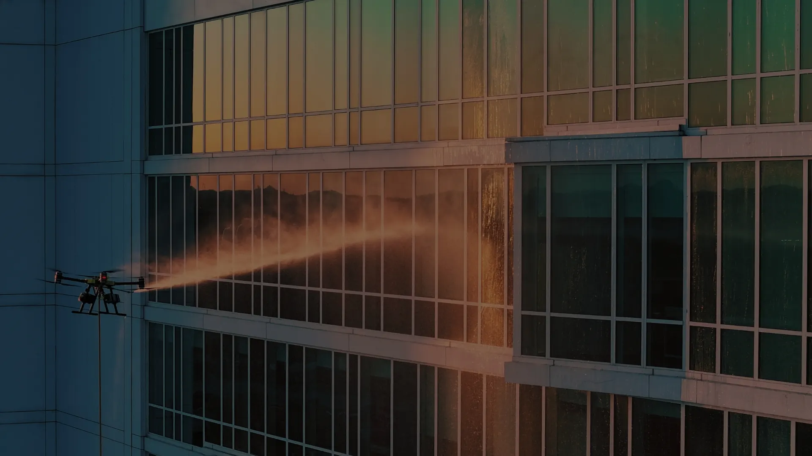
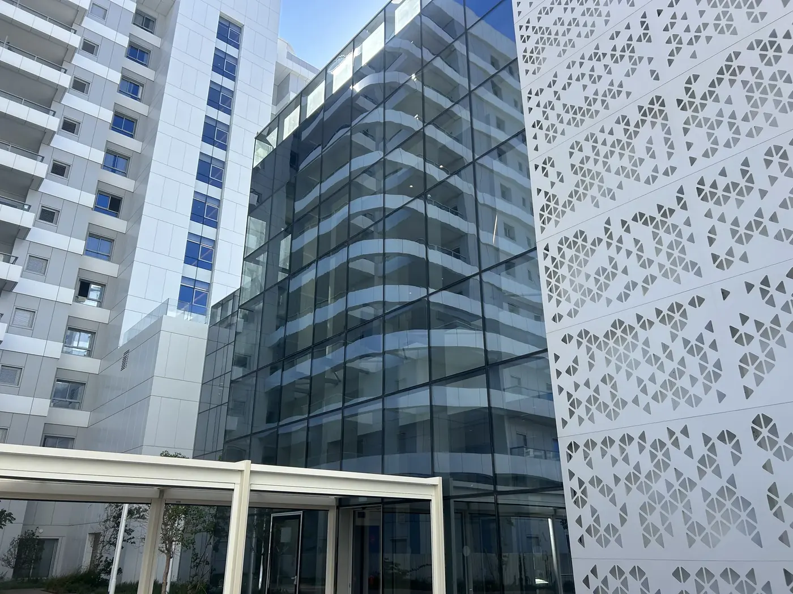

חדשנות טכנולוגית
מערכת לניקוי חזיתות ברחפן, שמשלבת סינון מים מתקדם וסבונים ייעודיים.

About
אקוודרון היא חברת ניקוי חזיתות ישראלית. אנחנו מנקים מבנים, חלונות וחיפויים באמצעות רחפנים מתקדמים – פתרון בטוח, יעיל וחסכוני לתחזוקת מעטפות מבנים בגובה.
מי אנחנו
אנחנו כאן כדי להגדיר מחדש את סטנדרט ניקוי החזיתות והמבנים בישראל. במקום פיגומים, סנפלינג וסגירת שטחים – רחפנים ייעודיים, יחד עם חיישנים, בקרת טיסה ומערכות סינון. כך מגיעים לניקוי מדויק, בטוח ומהיר.
אקוודרון מנקה חזיתות, חלונות, חיפויים ופאנלים סולאריים באמצעות רחפן. השירות מיועד לבעלי נכסים, חברות ניהול, קבלנים ומנהלי תחזוקה שמחפשים תחזוקה למעטפת המבנה – בלי לעלות לגובה.
אנחנו פעילים בכל רחבי ישראל, עם דגש על מרכז הארץ, אזור השרון, תל אביב וגוש דן. ניקוי, מבחינתנו, הוא לא רק מראה: הוא חלק משמירה על הנכס. כל פרויקט מתוכנן מתוך מחויבות לאיכות, לחדשנות ולשירות שמותאם ללקוח.

Values
מערכת לניקוי חזיתות ברחפן, שמשלבת סינון מים מתקדם וסבונים ייעודיים.
העבודה מתבצעת מהקרקע, בלי סנפלינג ובלי סיכונים – לצוות ולסביבה.
מערכות חסכוניות וחומרים מתכלים, כדי לנקות בלי לוותר על הסביבה.
שמים את הלקוח ראשון: שירות מקצועי, אישי, ומותאם לנכס.
Purpose built
מערכת אחת שמשלבת רחפן עוצמתי, טיפול מים מתקדם וסבון ייעודי – לניקוי יעיל, בטוח ומדויק.
מים טהורים באוסמוזה הפוכה ולחץ מים מתאים – זכוכית וחזיתות בלי כתמי אבנית ובלי סימנים.
צילום 4K ובינה מלאכותית לזיהוי לכלוך, ופעולה שקטה ובטוחה בסביבה עירונית.
סבון פעיל מתכלה, מותאם לסוג המשטח ולעומס הלכלוך, ומפרק שומן, פיח ועובש.
התזת מים בלחץ גבוה ומדויק, גם במקומות שקשה להגיע אליהם.
Vision
להוביל את מהפכת הניקוי האווירי בישראל, ולבסס סטנדרט חדש לתחזוקת מעטפות מבנים: בטיחות ללא פשרות, דיוק טכנולוגי וזמני ביצוע קצרים.
כל פרויקט נבנה בתכנון מוקפד ובשיטת עבודה מונחית־נתונים, עם שירות מקצועי ואישי. התוצאה: ניקיון עקבי, ושקט תפעולי לעסקים ולדיירים.

השאירו פרטים או דברו איתנו בוואטסאפ – נחזור עם מידע והצעת מחיר, בלי התחייבות.
מגדלי מגורים ומשרדים, בתי מלון, קניונים ומרכזים מסחריים, שלטי חוצות, מבני תעשייה ומפעלים, פאנלים סולאריים, מוסדות ציבור ותשתיות. בכל מבנה אנחנו מתאימים את שיטת העבודה, סוג המים, עוצמת הלחץ והסבון.
הוא בטוח יותר, מהיר פי 4, מאפשר כיסוי של 360° סביב המבנה, גורם לפחות הפרעה לדיירים ולעסקים, לא דורש פיגומים – וחוסך בעלויות.
לא. הרחפן מופעל מהקרקע, כך שאין צורך בפיגומים, חבלים או סנפלינג – ואין אנשים שעובדים בגובה.